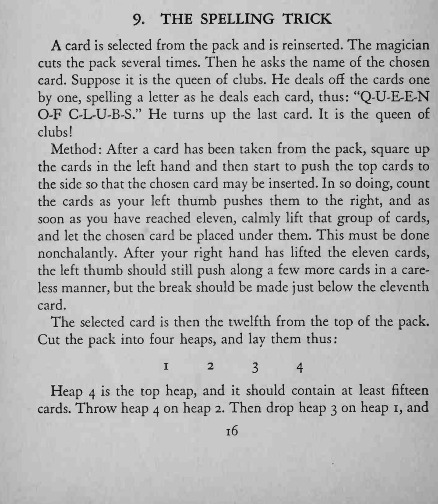
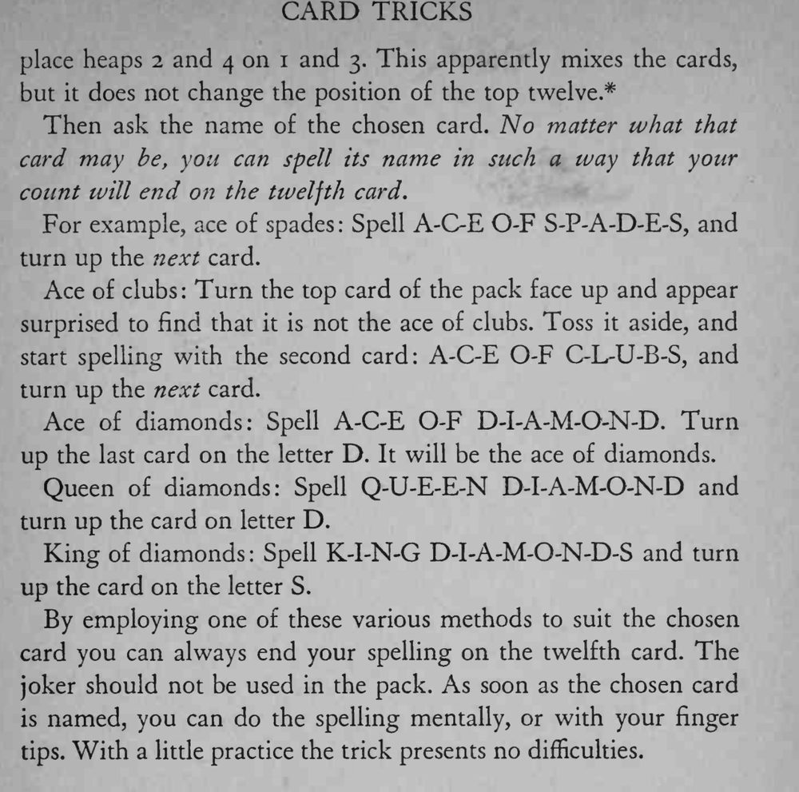

观众说出选牌的名字，魔术师把牌一张张拼着字母发下去，最后翻开的正是那张选牌。
A、Q、K 等牌名的拼法各不相同，事先把几种拼法练熟，拼错的次数越少越自然。


A card is selected from the pack and is reinserted. The magician cuts the pack several times. Then he asks the name of the chosen card. Suppose it is the queen of clubs. He deals off the cards one by one, spelling a letter as he deals each card, thus: "Q-U-E-E-N O-F C-L-U-B-S." He turns up the last card. It is the queen of clubs! Method After a card has been taken from the pack, square up the cards in the left hand and then start to push the top cards to the side so that the chosen card may be inserted. In so doing, count the cards as your left thumb pushes them to the right, and as soon as you have reached eleven, calmly lift that group of cards, and let the chosen card be placed under them. This must be done nonchalantly. After your right hand has lifted the eleven cards, the left thumb should still push along a few more cards in a careless manner, but the break should be made just below the eleventh card. The selected card is 1234 then the twelfth from the top of the pack. Cut the pack into four heaps, and lay them thus: Heap 4 is the top heap, and it should contain at least fifteen cards. Throw heap 4 on heap 2. Then drop heap 3 on heap 1, and place heaps 2 and 4 on 1 and 3. This apparently mixes the cards, but it does not change the position of the top twelve.* Then ask the name of the chosen card. No matter what that card may be, you can spell its name in such a way that your count will end on the twelfth card. For example, ace of spades Spell A-C-E O-F S-P-A-D-E-S, and turn up the next card. Ace of clubs Turn the top card of the pack face up and appear surprised to find that it is not the ace of clubs. Toss it aside, and start spelling with the second card: A-C-E O-F C-L-U-B-S, and turn up the next card. Ace of diamonds: Spell A-C-E O-F D-I-A-M-O-N-D. Turn up the last card on the letter D. It will be the ace of diamonds. Queen of diamonds: Spell Q-U-E-E-N D-I-A-M-O-N-D and turn up the card on letter D. King of diamonds: Spell K-I-N-G D-I-A-M-O-N-D-S and turn up the card on the letter S. By employing one of these various methods to suit the chosen card you can always end your spelling on the twelfth card. The joker should not be used in the pack. As soon as the chosen card is named, you can do the spelling mentally, or with your finger tips. With a little practice the trick presents no difficulties.